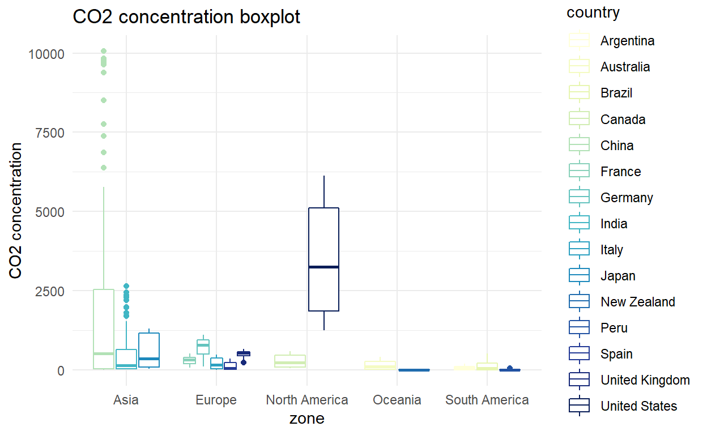
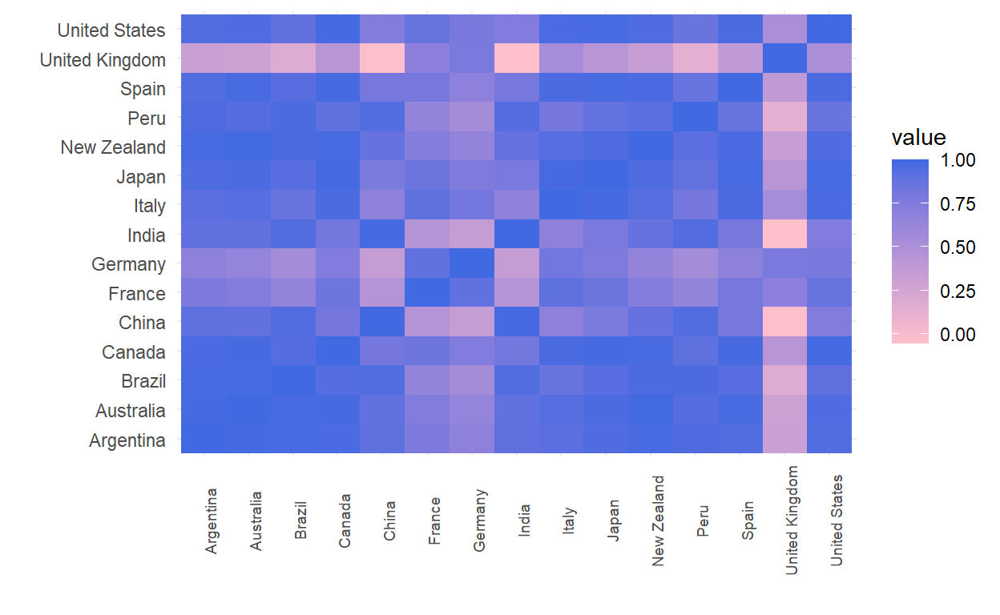

In this post we will use DFM to investigate
the CO2 emissions produced over the last 100 years by 15 countries of different geographical and economical areas. To estimate the models we will use the R package MARSS.
Carbon dioxide emissions are the primary driver of global climate change and it is widely recognized that to avoid the worst impacts of climate change, the world needs to urgently reduce emissions. Prior to the Industrial Revolution, emissions were very low and growth in emissions was still relatively slow until the mid-20th century. For example, in 1950 the world emitted just over 5 billion tonnes of (CO2), about the same as the US, or half of China’s annual emissions today. By 1990 this had quadrupled to 22 billion tonnes. Emissions have continued to grow rapidly and we now emit over 36 billion tonnes each year. Emissions growth has slowed over the last few years, but they have yet to reach their peak.
The purpose of this post is to use dynamic factor models and try to identify hidden common trends between the three main geographical areas of EU, North America and Asia that can be used to describe the evolution of the CO2 emissions. We will consider CO2 emissions from 15 of the main Global Economies.To fit our model we will use the R package MARSS
The data that we consider available at the following link:
https://raw.githubusercontent.com/owid/co2-data/master/owid-co2-data.csv
The data contains the CO2 emissions, the GPD and other relevant variables for all the world countries starting from 1715 to 1018. In our analysis we will consider data starting from 1900 to 2018 for the following countries: Italy, United Kingdom, France, Germany, Spain, United States, Canada, Japan, India, China, Argentina, Brazil, Peru, New Zealand and Australia
We start the analysis by loading the data into R. In my case the data in in the project folder
# Read data
co2 <- read.csv("owid-co2-data.csv")
We proceed filtering out the countries and the variables that are not of interest to us. Moreover, as it might be interesting to compare the results at continent level we add the variable zone which contains the geographic zone of every country that we selected.
# Filter countries to include in the analysis
countries <- c("Italy","United Kingdom","France","Germany","Spain","United States",
"Canada","Japan", "India", "China", "Argentina",
"Brazil", "Peru", "New Zealand", "Australia")
# Define geographical zones
zone <- c(rep("Europe",5), rep("North America", 2), rep("Asia",2),
rep("South America",3), rep("Oceania",2))
# Add geographical zones to the data
co2 <-co2 %>%
mutate(zone = ifelse(country %in%
c("Italy","United Kingdom","France","Germany","Spain"),
"Europe",ifelse( country %in% c ("United States","Canada"), "North America",
ifelse(country %in% c("Japan", "India", "China"), "Asia",
ifelse(country %in% c("Argentina","Brazil", "Peru"),"South America", "Oceania")))))
# Filter the data
dat <- co2 %>%
# filter the countries and the year
filter(country %in% countries &
year >= 1910) %>%
# select columns
select(iso_code, country, year, zone, co2)
Now we are ready to analyze our data. Lets start by
looking at the temporal structure of the CO2 emissions for the different countries.
nb.cols <- length(countries)
mycolor <- mycolors <- colorRampPalette(brewer.pal(9, "YlGnBu"))(nb.cols)
# Co2 Emissions Plot
# Plot co2 emissions
p1 <- dat %>% ggplot(aes(x = year, y = co2, color = country)) +
geom_line() +
scale_color_manual(values = mycolor) +
ggtitle("CO2 emissions time series")+
ylab("CO2 emissions") +
theme_minimal()
ggplotly(p1)
As we immediately see there are big differences in the CO2 emissions. As expected USA is the country with the highest CO2 emissions for the entire period, followed by China that shows an impressive positive trend starting from 1975. Germany, Japan and India represent the other four countries with the highest CO2 values. Since there are great differences between the series, in order to reduce the discrepancies it might be useful to take a look at the log transformed data.
With the log transform we are able to see that there is a upward trend common to all of the countries. By looking at the whole picture in more detail we see that Peru and New Zealand are the countries with the lowest emission. Moreover, an interesting pattern is observed around 1945 where many countries exhibit severe downward spikes.
p1 <- dat %>% ggplot(aes(x = zone, y = co2, color = country)) +
geom_boxplot() +
scale_color_manual(values = mycolor) +
ggtitle("CO2 concentration boxplot")+
ylab("CO2 concentration") +
theme_minimal()
p1

When we consider the aggregated data over the entire period the differences in the CO2 emission between countries are even more evident. Oceania and South America are the zone with the lowest and less variable average emissions. In Europe the emissions appear on average pretty low but more variable compared to those of Oceania and South America. Overall, with the exception of USA and China, we observe that the variability and the average value of the CO2 emissions are similiar between the countries that belong to the same geographical zone.
p1 <- dat %>%
group_by(year,zone) %>% summarise(co2 = sum(co2)) %>%
ggplot() +
geom_line(aes(x = year, y = co2, color = zone),
size = 1.2, alpha = 0.6) +
scale_color_brewer(palette = "Set2") +
ggtitle("CO2 total concentration by area")+
ylab("CO2 concentration") +
theme_minimal()
ggplotly(p1)
To conclude our exploratory analysis we compute and examine the correlation of the CO2 emissions between the different countries. It appears that in general there is a general high positive correlation between the CO2 levels observed in the different countries and apparently this correlation is not strictly related to the geographical area.

Having explored our data we proceed to specify the model. In this case we will use a dynamic factor model to identify common trends between the CO2 emissions of the different countries. Compared to VAR, dynamic factor models require an inferior number of parameters to be estimated, and therefore they can be applied to high dimensional context. Following Harvey (referenze) we adopt the following Dynamic Factor model (DFM)
\[\begin{align} \begin{pmatrix} x_{1} \\ x_{2} \\ \vdots \\ \x_{m} \end{pmatrix}_{t} &= \begin{pmatrix} 1 & 0 & \cdots & 0 \\ 0 & 1 & \cdots & 0 \\ \vdots& \cdots & \ddots &\cdots & \vdots \\ 0 & 0 & \cdots & 1 \end{pmatrix} \end{align}\]
According to model (ref) \(m\) hidden trends, each one described by a random walk and possibly correlated to the other, can describe CO2 emissions of the different countries. The relevance that each state has on the observed series is expressed by the corresponding factor loading. According to the explanatory analysis we fit a mode with four states and an unrestricted covariance matrix. As it is generally suggested when fitting this kind of models the observations are standardized. In the following we reshape our data in a \(N \times T\) matrix and proceed to fit the model
# row: country column: year
y <- dat %>%
select(-c("zone")) %>%
pivot_wider(names_from = year, values_from = co2) %>%
arrange(iso_code)
# convert the data in matrix
y = as.matrix(y[,3:ncol(y)])
# set parameters for optimizer
cntl.list <- list(minit = 200, maxit = 5000, allow.degen = FALSE)
# Define values for grid search
# define covariance structures for the states
R.structure <- "unconstrained"
m <- 4
model.list <- list(m = m, R = R.structure)
# fit model to standardized data
mod.me <- MARSS(y, model = model.list, z.score = TRUE, form = "dfa",
control = cntl.list, silent = TRUE)
Once we have estimated our model we can extract and plot the states of the system. Since there exhists many possible solutions to model (ref), we apply the varimax rotation of the factors and of the trends. (referenza)
# perform rotation of the states before plotting
# get the inverse of the rotation matrix
Z.est <- coef(mod.me, type = "matrix")$Z
H.inv <- 1
if (ncol(Z.est) > 1){
H.inv <- varimax(coef(mod.me, type = "matrix")$Z)$rotmat}
# rotate factor loadings
Z.rot <- Z.est %*% H.inv
#extract the rotated loadings and reshape into a matrix
loadings <- t(Z.est) %>% data.frame()
colnames(loadings) <- unique(dat$country)
loadings$x <- c("X1","X2", "X3", "X4")
# add zone to the loadings
loadings <- loadings %>%
pivot_longer(-c("x"), names_to = "country", values_to = "loading") %>%
mutate(zone = ifelse(country %in%
c("Italy","United Kingdom","France","Germany","Spain"),
"Europe",ifelse( country %in% c ("United States","Canada"), "North America",
ifelse(country %in% c("Japan", "India", "China"), "Asia",
ifelse(country %in% c("Argentina","Brazil", "Peru"),"South America", "Oceania")))))
# rotate trends and covnert them to a data frame
trends.rot <- solve(H.inv) %*% mod.me$states
trends.rot <- t(trends.rot)
trends.rot <- data.frame(trends.rot)
# assign column names
colnames(trends.rot) <- c("x1","x2","x3","x4")
# add year and reshape
trends.rot$Year <- seq(from = 1910, to = 2018)
trends.rot <- trends.rot %>%
pivot_longer(cols = -c("Year"),
names_to = "state", values_to = "val") %>%
group_by(state) %>% dplyr::arrange(Year, .by_group = TRUE)
# obtain estimated states
s <- tsSmooth(mod.me)
colnames(s) <- c("state", "Year", "val","se")
s$statesRot <- trends.rot$states
s$Year <- rep(seq(from = 1910, to =2018),4)
Figure 1: Smoothed states
Figure 2: Loading factors
Figure 1 shows the smoothed states before and after the varimax rotation and Figure 2 the rotated factors loadings of the different series. By looking at the loadings in Figure 2 we immediately see that X1 represent the state more relevant to all the countries. All the loadings associated to it are positive and it describes the common upward trend observed in the exploratory phase. State X3 is characterized by slow negative trend followed by a slow increasing ramp at the end at the period. The largest loadings, in absolute value associated to it are observed for Italy, Japan, France, china and India. To conclude state X3 and X4 describe two opposite behaviors. It is interesting to note that for states X3 and X2 the loadings associated to Italy, India, Germany and France follow the exact opposite behavior of those associated to Japan and China.
Having inspected the common trends it is time to check if the model is truly able to produce accurate forecasts for the series considered. We consider the one step ahead predictions and the associated prediction errors.
p1 <- y.hat %>% ggplot() +
geom_point(aes(x = Year, y = y, group = country),color = "pink", alpha = 0.7) +
geom_line(aes(x = Year, y = estimate, group = country),
size = 1.2, color = "royalblue", alpha = 0.7) +
facet_wrap(~country, ncol = 3) +
ggtitle("One step ahead predictions") +
theme_minimal()
ggplotly(p1)
From plot ?? it appears that forecasts produced by the model are pretty accurate. Few pronounced errors are observed for the series of Italy and France in 1921, 1925 and 1945. In order to quantify the accuracy and compare numerically the predictive power of the model for the different countries we compute the following error metrics:
# define the metrics
mse <- function(x){
m <- mean((x$y - x$estimate)^2)
return(m)
}
mae <- function(x){
m <- mean(abs(x$y - x$estimate))
return(m)
}
mape <- function(x){
m <- mean(abs(((100*(x$y - x$estimate))/x$y)))
return(m)
}
# estimate the metrics for the different series
metrics <- y.hat %>% group_by(country) %>%
nest() %>% mutate(mse = lapply(data,mse),
mae = lapply(data,mae),
mape = lapply(data,mape)) %>%
unnest() %>%
dplyr::select(country,mse,mae,mape) %>%
arrange(desc(mse), desc(mae), desc(mape)) %>%
unique()
metrics %>% formattable(list(`mae` = color_bar("#FA614B"),
`mse` = color_bar("#FA614B"),
`mape` = color_bar("#FA614B")))
| country | mse | mae | mape |
|---|---|---|---|
| Italy | 0.23449772 | 0.34920901 | 61.627063 |
| France | 0.11989005 | 0.25547754 | 55.527271 |
| India | 0.06942096 | 0.19600775 | 26.820661 |
| United States | 0.03895182 | 0.13126001 | 19.397801 |
| United Kingdom | 0.03879142 | 0.11797902 | 18.352430 |
| Germany | 0.02432059 | 0.10238886 | 32.273276 |
| Canada | 0.02263689 | 0.08088415 | 12.099801 |
| Peru | 0.01909765 | 0.07754633 | 10.742386 |
| Spain | 0.01890602 | 0.08433286 | 35.637270 |
| New Zealand | 0.01766297 | 0.08086102 | 16.778824 |
| Argentina | 0.01546800 | 0.06652019 | 10.597381 |
| Brazil | 0.01469260 | 0.07118643 | 13.188483 |
| Japan | 0.01302614 | 0.07027200 | 12.687478 |
| Australia | 0.01213309 | 0.04829242 | 9.977388 |
| China | 0.01097965 | 0.05938297 | 21.672444 |
There is a general agreement in the metrics for Italy, France and India that appear as the countries for which the model produces the worst predictions. MAjor disagreements are observed for China, Spain and Germany. While according to mse and mae the performances in predicting the CO2 emissions of these countries are not that bad, the same is not observed in the mape. Overall by taking into account that no covariates are included in the model and that the states are modeled as random walk the one step ahead predictions appear good. However, it is important to note that in order to produce accurate forecasts on longer horizons model the states as autoregressive process or including covariates should be seriously considered.
We conclude the analysis with the inspection of the residuals plot in order to check if the underlying model assumptions are violated.
# plot model residuals
p1 <- mod.res %>% ggplot() +
geom_point(aes(x = Year, y = .resids, group = country), color = "royalblue", alpha = 0.4) +
geom_ribbon(aes(x = Year, ymin = - 1.96*.sigma,
ymax = +1.96*.sigma), alpha = 0.4) +
facet_wrap(~country, ncol = 3) +
theme_minimal() +
ylab("residuals") + ggtitle("Fitted residuals")
ggplotly(p1)
Figure 3: Fitted residuals
Figure 4: State residuals
From @(fig:fittedres) we see that the overall fit of the model is not too bad, but for some countries such as Italy, France and India the model is not able to capture a correlation structure that remains evident in the cyclical pattern of the residuals. Moreover, some outlying units appear to be present in the data. This is particularly evident for Italy, France, India and United Kingom. From figure @(fig:stateres) the state residuals appear well dispersed but for state X4 there is some autocorrelation evident from the cyclical pattern.
Overall the normality assumption appears satisfied for the fitted residuals, while in the state residuals a slight deviation is observed in state X3 and X4.
In this post we have investigated the application of dynamic factor model to study the CO2 emissions of 15 countries. Despite the model performed well when the forecast horizon is equal to one year, in order to produce forecasts for longer horizons the inclusion of covariates or the use of autoregressive process to describe the evolution of the states is needed. This is also confirmed from the analysis of the residuals that both at observation and state level showed a cyclical pattern. Moreover the inclusion of dummy variable to account for structural breaks should be considered in order to improve the validity of the underlying model.